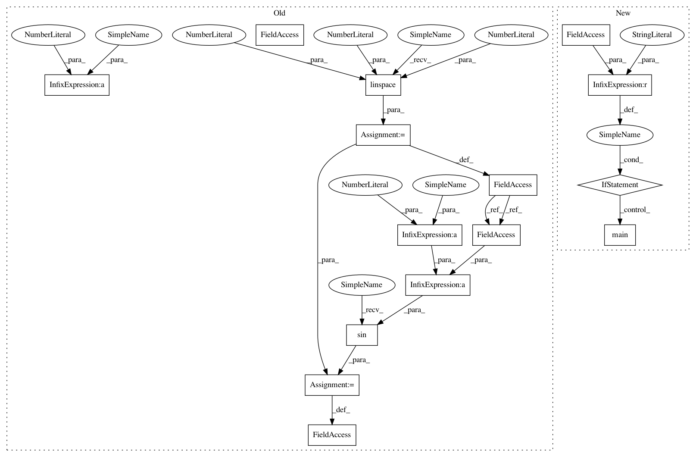

9af9ab51cee0c212ba1c689ae047558889464bc2,test/examples/test_kronecker_multitask_ski_gp_regression.py,,,#,17
Before Change
// Simple training data: let"s try to learn a sine function
train_x = torch.linspace(0, 1, 100)
// y1 function is sin(2*pi*x) with noise N(0, 0.04)
train_y1 = torch.sin(train_x * (2 * pi)) + torch.randn(train_x.size()) * 0.1
// y2 function is cos(2*pi*x) with noise N(0, 0.04)
train_y2 = torch.cos(train_x * (2 * pi)) + torch.randn(train_x.size()) * 0.1
// Create a train_y which interleaves the two
train_y = torch.stack([train_y1, train_y2], -1)
After Change
self.test_multitask_gp_mean_abs_error(cuda=True)
if __name__ == "__main__":
unittest.main()
In pattern: SUPERPATTERN
Frequency: 3
Non-data size: 15
Instances
Project Name: cornellius-gp/gpytorch
Commit Name: 9af9ab51cee0c212ba1c689ae047558889464bc2
Time: 2018-11-22
Author: balandat@fb.com
File Name: test/examples/test_kronecker_multitask_ski_gp_regression.py
Class Name:
Method Name:
Project Name: cornellius-gp/gpytorch
Commit Name: 9af9ab51cee0c212ba1c689ae047558889464bc2
Time: 2018-11-22
Author: balandat@fb.com
File Name: test/examples/test_simple_gp_regression.py
Class Name:
Method Name:
Project Name: cornellius-gp/gpytorch
Commit Name: 9af9ab51cee0c212ba1c689ae047558889464bc2
Time: 2018-11-22
Author: balandat@fb.com
File Name: test/examples/test_kronecker_multitask_ski_gp_regression.py
Class Name:
Method Name:
Project Name: cornellius-gp/gpytorch
Commit Name: 9af9ab51cee0c212ba1c689ae047558889464bc2
Time: 2018-11-22
Author: balandat@fb.com
File Name: test/examples/test_white_noise_regression.py
Class Name:
Method Name: